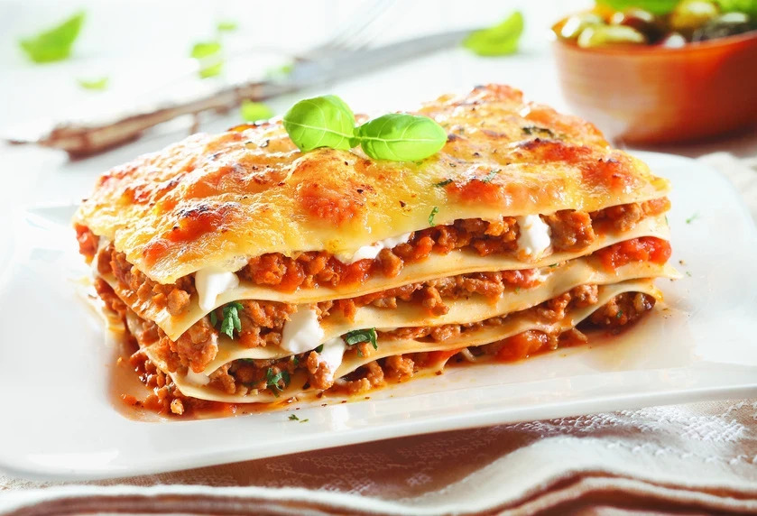

Lasagna

Description
This is a recipe for a delicious and simple lasagna.
Ingridients
- 500g/17.65oz organic grass fed veal mince
- 500g/17.65oz organic grass fed pork mince
- 1 carrot (diced into small cubes)
- 1 celery stick (diced into small cubes)
- ½ brown onion (diced into small cubes)
- 2 bottles Italian passata (homemade or organic if possible)
- 1 glass red wine
- Salt & Pepper
- Provolone cheese
- Buffalo Mozzarella OR Fior di latte
- Grated pecorino or Parmigiano Reggiano
- Fresh egg lasagna pasta sheets
- Extra virgin olive oil (EVOO)
- 25g/0.88oz butter
- 25g/1/8 cups plain flour
- 250ml/8.45fl oz Milk
- Sprinkle of salt
- Sprinkle of nutmeg
Steps
- Beef lasagna recipe starts with the most important step – making the soffrito! This is the key to a tastier filling so add a generous amount of extra virgin olive oil to a large pot and let it slowly heat.
- Next, add the chopped up carrot, celery and onion and leave to cook for 5-10 minutes or until it has started to soften.
- Add the mincemeat to your pot and break it down using a wooden spoon while it starts to brown. Leave to simmer and stir every so often until it has started to brown.
- Once the mincemeat for your beef lasagna has browned, add the glass of red wine and stir through with a wooden spoon. Leave this to simmer until it evaporates remembering to stir every so often.
- Add 1 ½ bottles passata and stir through. Make sure the stove is on a medium-low heat, then cover the pot and let simmer for one hour.
- Go back to the pot every now and then and stir the sauce using a wooden spoon.
- After one hour, remove the lid and you will notice the tomato has reduced. Add one glass of water at this point and let cook on a low heat. Add more water if you believe it has dried up too much otherwise leave as it is.
- The sauce needs another hour to cook with the lid off. Remember to stir it!
- Next, the béchamel! Put the small saucepan on your stove at a low heat and add butter.
- Leave to melt slowly then add flour and quickly stir using a whisk. Keep doing this until the flour has disappeared.
- Slowly add the milk (around 1/4 at first) and don’t stop stirring! Continue adding the milk and stirring – be gentle yet firm. This will avoid it from sticking to the bottom and also from forming lumps.
- The sauce should start to become creamy and thick – stop once you have reached your desired consistency.
- Turn off the stove and add a sprinkle of salt and nutmeg.
- Line the baking tray with extra virgin olive oil or melted butter, using a pastry brush.
- Adjust the size of the lasagna sheets according to your dish so they fit nicely just by cutting them to size.
- Add a scoop of beef lasagna sauce to the bottom of the try and spread it all over, before laying down the first layer of lasagna sheets.
- Next scoop more sauce over the top of the pasta and spread it (using the bottom of a tablespoon or a wooden one) before sprinkling pecorino/parmigiano cheese on top, then add provolone and fresh mozzarella (your desired amount).
- Add some béchamel – not too much and spread it slightly.
- Add another layer of pasta sheets then repeat step 17 until you create the number of layers you wish – I aim for 5-6!
- Add plain basil tomato sauce on top, spreading it all over, edge to edge and in each corner too.
- Coverv the beef lasagna with foil and place in a pre-heated oven for 20 minutes at 180°C/350°F (fan forced).
- Remove from the oven and take the foil off, before adding a generous sprinkle (all over) of pecorino/parmigiano cheese.
- Bake in the oven again (no foil) for another 10 minutes then remove and let cool.